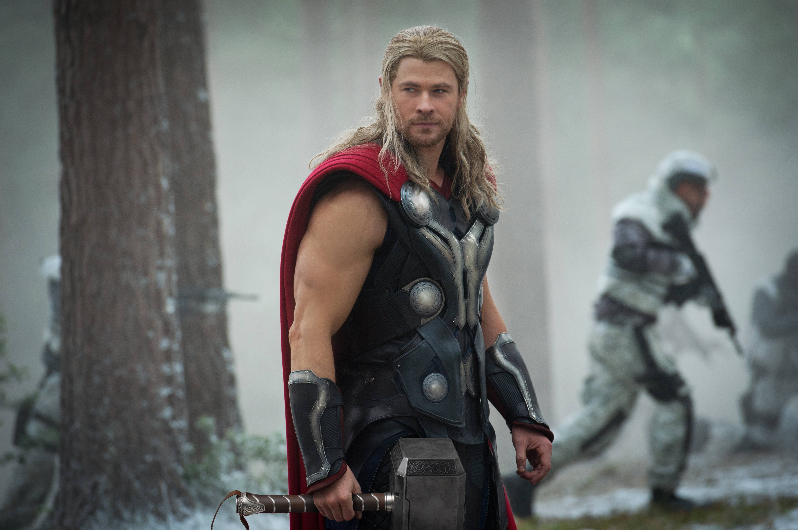

Thor
Thor
Thor, the God of Thunder, is one of the most powerful beings in the Marvel Universe. As the son of Odin, ruler of Asgard, Thor wields the enchanted hammer Mjölnir, which grants him the power of flight, weather manipulation, and immense strength. He is a founding member of the Avengers and a defender of both Earth and the Nine Realms.
Real Name: Thor Odinson
First Appearance: Journey into Mystery #83 (1962)
Origin
Born on Asgard, Thor was groomed to one day become the king of the realm. However, due to his arrogance, Odin banished Thor to Earth to teach him humility. Thor soon proved himself worthy of his powers and became a protector of both Asgard and Earth, eventually joining the Avengers to fight against cosmic threats.
Abilities and Weapons
- God of Thunder: Thor can summon and control lightning and storms.
- Superhuman Strength: He possesses immense physical strength, able to lift incredibly heavy objects and fight powerful foes.
- Mjölnir: His enchanted hammer grants him the ability to fly, control weather, and channel his power.
- Immortality: As an Asgardian, Thor has an extended lifespan and is resistant to most forms of injury.
Key Storylines
- Ragnarok: The prophesied end of Asgard. Thor fights to prevent the destruction of his home realm.
- The Unworthy Thor: After losing Mjölnir, Thor struggles with his identity and worth, seeking redemption.
- Infinity War/Endgame: Thor plays a crucial role in the battle against Thanos, suffering a personal loss but eventually avenging his people.
Personal Life
- Family: Son of Odin, brother of Loki, and adopted brother of Hela.
- Love Interest: Jane Foster, a mortal woman who later becomes the Mighty Thor in some storylines.
- Allies: Fights alongside the Warriors Three, Valkyrie, and the Avengers.
Fun Facts
- First Appearance: Journey into Mystery #83 (1962), created by Stan Lee, Larry Lieber, and Jack Kirby.
- Worthy of Mjölnir: Only those deemed worthy can lift and wield Thor’s hammer.
- MCU Impact: Portrayed by Chris Hemsworth, Thor has been a key figure in the Marvel Cinematic Universe.